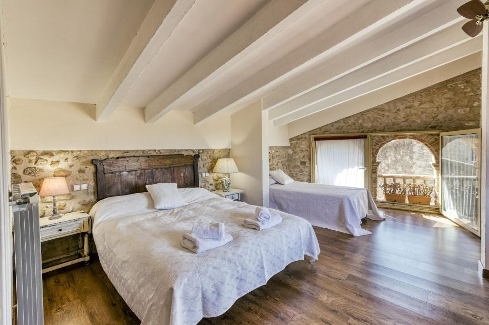

Grans Paisatges
Ca la Maria i Casa Vermella juntes, per a grups de fins a 18 persones
Casa sencera
350 m²
7 dormitoris
14 llits · 5 banys
Fins a 18 persones
Ca la Maria + Casa Vermella
Terrassa i balcó
Vistes a la muntanya
La casa
Un gran espai per a grups nombrosos
Grans Paisatges és una casa de 350 m² a Orriols amb 7 dormitoris, 14 llits i 5 banys. Ofereix balcó, jardí i WiFi gratuït, vistes al jardí i una terrassa amb vistes a la muntanya, a més de TV i cuina totalment equipada.
Hi ha roba de llit i tovalloles, zona de jocs infantil a l’allotjament i, a la zona, es pot practicar ciclisme. Reuneix Ca la Maria i Casa Vermella: tot l’espai per a vosaltres.
Terrassa
Terrassa amb barbacoa
La terrassa de Ca la Maria, amb barbacoa i vistes a la muntanya, per a àpats a l’aire lliure i llargues sobretaules.

Sala d’estar
Espai per compartir moments
Sales àmplies amb sofàs còmodes, perquè tot el grup pugui relaxar-se plegat.

Casa Vermella
Sala amb llar de foc
Casa Vermella suma una segona sala amb llar de foc, llibres i parets de pedra.

Dormitoris
Set dormitoris i catorze llits
7 dormitoris i 14 llits entre les dues cases, amb roba de llit i tovalloles.

A la casa
Serveis i comoditats
Tot el que necessites per a l’estada, a la casa sencera i només per a tu i el teu grup.
- Casa sencera només per a tu
- 7 dormitoris i 14 llits
- 5 banys
- Terrassa amb vistes a la muntanya
- Balcó, jardí i vistes al jardí
- Cuina totalment equipada
- TV
- WiFi gratuït
- Aparcament gratuït al carrer
- Admet mascotes (pot comportar algun càrrec)
- Zona de jocs infantil
- Roba de llit i tovalloles
- Habitacions sense fum
L’entorn
A prop de la casa
Orriols és un petit poble de l’Alt Empordà. Des de la casa hi ha esglésies, ermites i el castell de Vilademuls a pocs quilòmetres, i molts camins per fer en bicicleta o a peu. Distàncies calculades amb OpenStreetMap.
Església de Sant Joan
4,6 km
Castell de Vilademuls
4,6 km
Església de Sant Martí de Fellines
4,8 km
Església de Sant Vicenç
5,2 km
Ermita de Sant Sebastià
5,3 km
Aeroport de Girona - Costa Brava
35 km
Galeria d’imatges de Grans Paisatges
Totes les fotos de Grans Paisatges: espais, habitacions i racons de la casa.


Reserva
Vols viure Grans Paisatges?
Consulta disponibilitat i preus, o reserva directament a Booking.